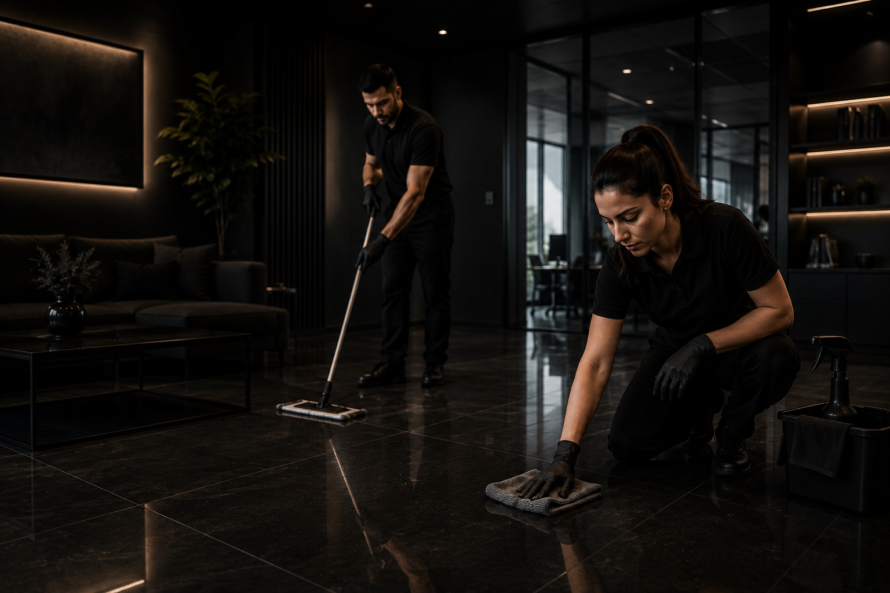

Sorgfältige, zuverlässige und flexible Reinigungslösungen für Wohnhäuser, Mehrfamilienhäuser, Büros und Gewerberäume.
Von der laufenden Unterhaltsreinigung bis zur gründlichen Endreinigung arbeiten wir strukturiert, pünktlich und mit grosser Sorgfalt.
Unsere Reinigungsdienstleistungen werden individuell auf das Objekt, die Nutzung und die gewünschten Intervalle abgestimmt – für private, gewerbliche und verwaltete Liegenschaften.
Reinigung von Büros, Praxen, Verwaltungsgebäuden und gewerblichen Räumen – abgestimmt auf Nutzung und gewünschte Reinigungsintervalle.
Regelmässige Reinigung von Treppenhäusern, Eingangsbereichen, Gemeinschaftsflächen, Technikräumen und weiteren allgemeinen Bereichen.
Gründliche Reinigung von Küche, Bad, Böden, Türen, Fenstersimsen und weiteren Flächen nach Bedarf oder Checkliste.
Entfernung von Bauschmutz, Staub und Rückständen nach Umbau, Renovation oder Neubau.
Reinigung von Glasflächen innen und aussen – je nach Zugänglichkeit und Objektanforderung.
Erstellung passender Reinigungslösungen für Ihre Immobilie, Ihre Räume und Ihre betrieblichen Abläufe.
Umfang, Häufigkeit und Art der Reinigung werden individuell auf Ihre Anforderungen und die Nutzung Ihrer Räume abgestimmt.

Gerne erstellen wir Ihnen eine unverbindliche Offerte für Reinigungsdienstleistungen – individuell auf Ihre Bedürfnisse abgestimmt.
Zur Kontaktseite